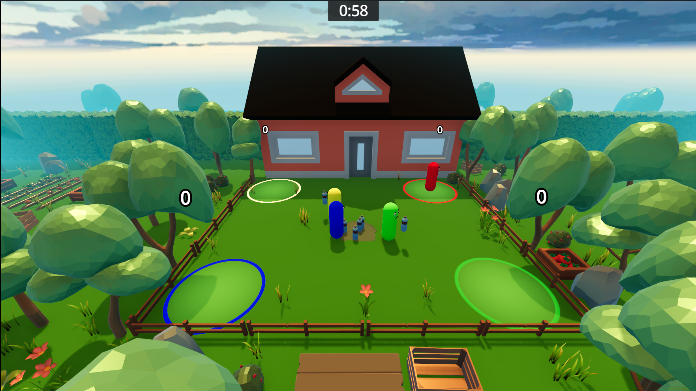
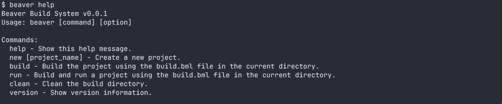
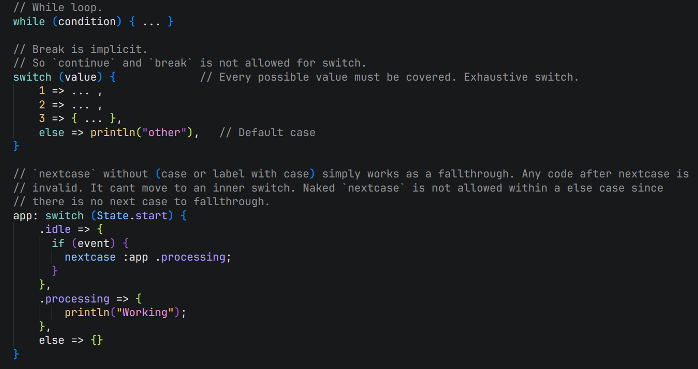
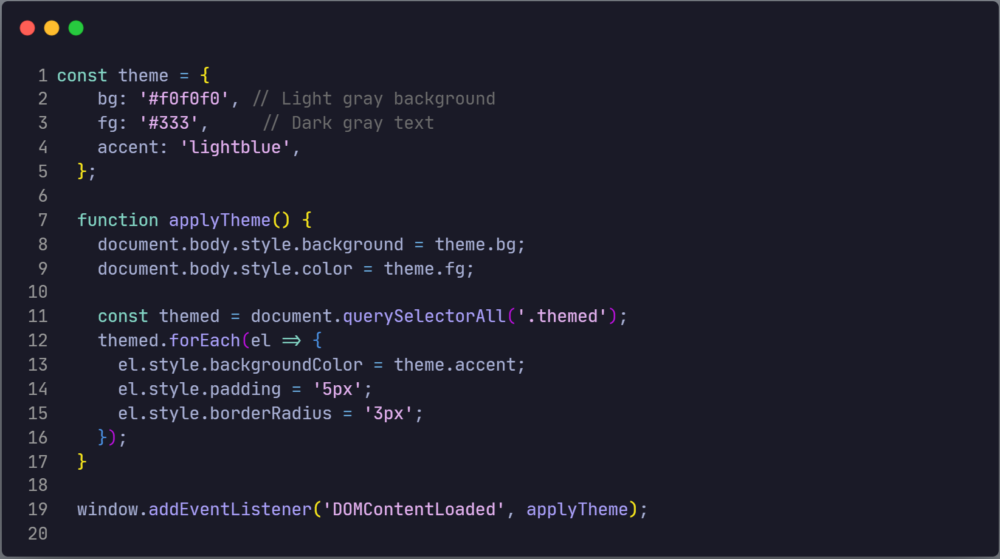

Game Developer & Systems Programmer
I am a passionate gamer and developer specializing in gameplay mechanics, systems engineering and engine tools. Most of my game engine experience is built within Godot. Besides just gameplay design, I enjoy building low-level developer tools, custom languages and modding games to understand how software works under the hood.
A simple categorization of my skills:
Game Engines: Godot Engine (GDScript focus), Unreal Engine, Unity Engine.
Languages: C, C++, C#, Java, Kotlin, Go, Python, Zig, Odin, Rust.
Tools & Build Systems: Ninja, Beaver, Git and VS Code extension development.
Other: Reinforcement learning basics, game modding, competitive programming (Codeforces 800–1000) and low-poly 3d modeling using Blender. Can adapt or learn new things quickly.
Bottle Blitz
Godot Engine / GDScript / Python
A 4 player game where the first player to steal 3 bottles from the center zone to their own zone wins. Any player can steal from another player zones. It features a traditional game AI (scripted) and a rl agent AI to play against.

Beaver Build System
C / Ninja
Super-fast, lightweight and easy to use build utility that interacts with Ninja to compile, run custom commands for C/C++ projects.

Eyn Programming Language (Working Name)
Go / Eyn (Bootstrap)
It is a simple, opinionated and fast-compiling systems language that prioritizes uniformity and explicitness over heavy abstraction. (In Active Development)

Nightfall Coder (Vscode Theme)
Json
Nightfall Coder is a balanced, minimalist dark theme designed for Visual Studio Code (VS Code). Click here to try it from vscode marketplace.

Chittagong Government High School (2019-2020)
Secondary School Certificate Examination
Chattagram, Bangladesh
5.00
Nou Bahini School And College, Chattogram (2021-2022)
Higher Secondary Certificate Examination
Chattagram, Bangladesh
5.0
Chittagong independent university (Running)
Bachelor of Science (CSE)